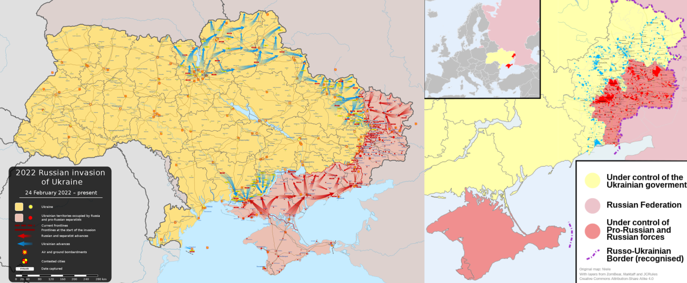
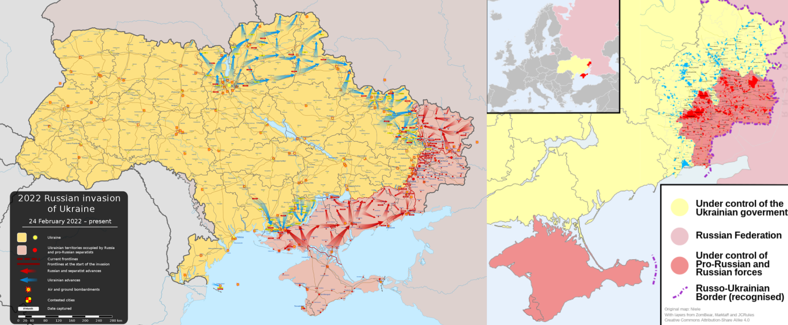

克里米亚2014年2月20日，俄罗斯决定兼并克里米亚。2月22日和23日，俄罗斯军队和特种部队开始由新罗西斯克进入克里米亚。2月27日，没有佩戴徽章的俄罗斯军队开始控制克里米亚半岛。他们掌握战略要地，占领克里米亚议会，升起俄罗斯国旗，并设立安全检查站，用来切断克里米亚半岛与乌克兰其他地区的联系，以限制该地区内的行动。

克里米亚2014年2月20日，俄罗斯决定兼并克里米亚。2月22日和23日，俄罗斯军队和特种部队开始由新罗西斯克进入克里米亚。2月27日，没有佩戴徽章的俄罗斯军队开始控制克里米亚半岛。他们掌握战略要地，占领克里米亚议会，升起俄罗斯国旗，并设立安全检查站，用来切断克里米亚半岛与乌克兰其他地区的联系，以限制该地区内的行动。
乌克兰东部顿巴斯地区以俄罗斯族为主要人口。俄罗斯帝国在18世纪末叶卡捷琳娜二世时期通过俄土战争从奥斯曼帝国获得“新俄罗斯”，包括了今日的顿巴斯地区。该地区俄罗斯化较深，1991年后乌克兰的一系列去俄罗斯化政策引起当地俄裔强烈不满。自1994年总统大选以来，顿巴斯地区和乌克兰西部地区投票支持总是相反。在2014年抗议中被罢免的总统亚努科维奇是出自顿巴斯地区顿涅茨克州的俄裔。